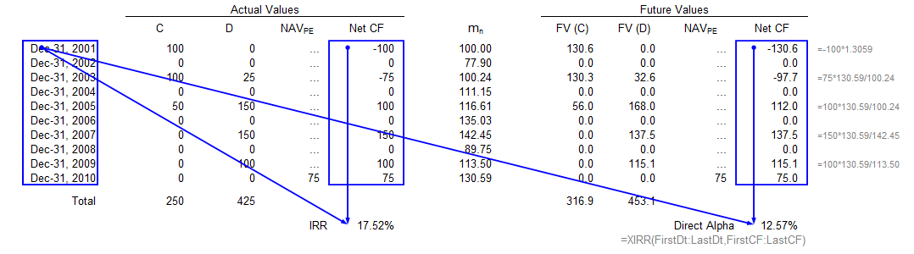
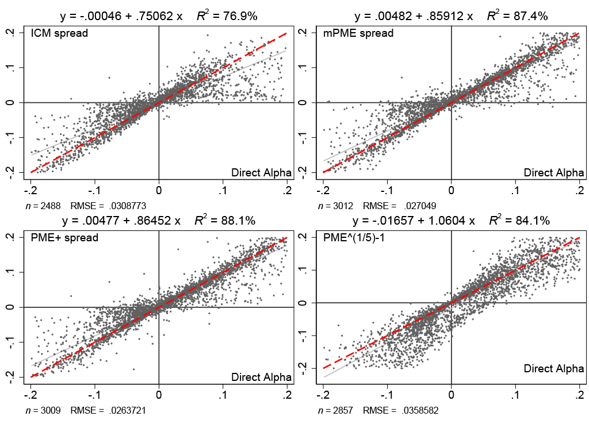

We develop a metric of periodic (e.g., quarterly or annualized) excess return of a 'private equity'-like fund that is well-founded in theory, while directly accounting for the risk-factor realizations and compounding returns over multiple periods of irregular lengths. We therefore name this metric Direct Alpha (DA). It is simply the Internal Rate of Returns (IRR) computed from the cash flows of the fund that were discounted using the returns of the benchmark portfolio. One of the key advantages of DA is therefore the fact most potential users already know how to compute it. The choice of benchmark portfolio however is critically important for the economic interpretation and statistical properties. Our methodology applies to other investment vehicles that are structured as PE fund partnerships, hold hard-to-value assets, and endure long lives (e.g., Infrastructure, Private Credit).
It is intuitive to view DA as annualized Kaplan Schoar (2005) Public Market Equivalent (PME) in a way that does not require an estimate of a duration of the fund. The relations between the Kaplan-Scholar PME and DA is analogous to that between the fund money multiple and the IRR (computed off the raw cash flows). However, to the extent the selected discount factors reflects the realized risk premia or the fund- or deal-specific risk exposures, DA inherits the more general interpretations and superior statistical properties from Generalized PME of Korteweg and Nagel (2016, 2021) and the fund mimicking benchmark portfolio of Gupta and Van Nieuwerburgh (2021).
We show how DA relates to other methods developed in the industry and applied work to estimate the annualized performance of PE funds. Specifically, we provide consistent notation and review the methodology of the Index Comparison Method (ICM) of Long and Nickels (1996), which is recognized as the first of the various PME methods, the PME+ of Rouvinez (2003) and Capital Dynamics, and the mPME by Cambridge Associates (2013). We use Burgiss data on cash flows of 4,188 buyout and venture funds and show that DA results in significantly different mean and variance of annualized PE fund returns when compared to the aforementioned heuristic estimates and duration-based approximations. The discrepancies are particularly stark for the venture sample and are larger than those arising from the benchmark choice and adjustments for the expected risk-quantity. We also show that the choice of PE fund alpha metric is consequential for fund ranking within its peers. The level of concordance with DA is as low as 46% for the middle two quartiles for ICM-PME but improves to 85% for Kaplan-Schoar PME adjusted for fund-specific duration estimates. The risk of severe misranking relatively to DA remains salient, nonetheless.
Several contemporaneous studies (see, inter alia, Phalippou and Gottschalg 2009; Driessen, Lin, and Phalippou 2012) have constructed the cash flow-specific discount rates as market return plus alpha and proposed solving for alpha that produces zero Net Present Value (analogously to solving for a bond credit spread). However, this approach too results in numerically different values from DA as (r_t+a)-series compound differently than r_t. Most importantly, DA yields economically valid alpha estimates even with non-tradeable risk factors.
The example is based on the a hypothetical fund’s cash flows and NAV reports (NAV_PE), which are dated as indicated in the first column of each table. Columns C (D) indicate contributions to (distributions from) the fund; whereas m_n indicates the level of the benchmark scaled to be 100 at the fund’s first cash flow on Dec-31, 2001. The corresponding future values, FV(C) and FV(D), are as of Dec-31, 2010. See Data and Codes for the spreadsheet with formulas.
See Section 2.B of the Full Text for definitions and discussions.
In our emprical analysis, we used Burgiss data on fund cash flows to compute and compare the fund alpha estimators considered in the paper. Burgiss data have been extensively used in academic research and by practitioners. We considred buyout and venture funds. We included all funds with greater than $5mln in committed capital incepted between 1983 and 2014. Our last observation wass 2021 Q1, Therefore all funds are at least 7-year old and the vast majority is fully resolved. The table below reports the summary statistics for our sample
| Mean | St.Dev. | P25 | P50 | P75 | |
|---|---|---|---|---|---|
| Buyout funds (N=2,435) | |||||
| Vintage year | 2005 | 6.71 | 2000 | 2006 | 2011 |
| Fund size (USD m) | 939 | 1747 | 180 | 397 | 892 |
| Internal Rate of Return (%) | 12.3 | 16.7 | 4.3 | 11.4 | 19.5 |
| Money Multiple | 1.73 | 1.02 | 1.21 | 1.59 | 2.07 |
| Venture funds (N=1,753) | |||||
| Vintage year | 2002 | 8.7 | 1998 | 2003 | 2008 |
| Fund size (USD m) | 237 | 283 | 63 | 150 | 301 |
| Internal Rate of Return (%) | 13.9 | 37.3 | -0.6 | 7.7 | 19.3 |
| Money Multiple | 2.41 | 3.73 | 0.95 | 1.54 | 2.55 |
Burgiss computes DA against several indices as part of their services packages to clients. We recomputed DAs and all other performance metrics using the code that implements a basic search for a most plausible polynomial root. We use CRSP value-weighted index as a proxy for market portfolio and Fama-French 12 industry returns (or one of the Fama-French 6 size- and style-returns) from Ken French's data repository for industry benchmark.
The table below reports the summary statistics of the DA estimates for our samples of buyout funds and venture funds. DA estimates are produced with two benchmarks (market and industry) and two ways to risk adjust (See Section 3 of the Full Text for details). Each fund's DA estimate was obtained at quarterly frequency and then annualized before computing the respective statistic: the mean, the standard deviation, and the median. All in %.
| Benchmark: | Market | Industry | Market | Industry | ||||
|---|---|---|---|---|---|---|---|---|
| Method: | Raw | Beta-adj | Raw | Beta-adj | Raw | Beta-adj | Raw | Beta-adj |
| Sample: | Buyout funds | Venture funds | ||||||
| Mean | 3.10 | 3.34 | 1.70 | 1.76 | 3.40 | -0.47 | -0.45 | -0.22 |
| St.Dev. | 15.8 | 15.7 | 15.9 | 15.8 | 29.9 | 27.6 | 24.7 | 24.6 |
| Median | 2.32 | 2.51 | 0.62 | 0.67 | -1.63 | -4.77 | -3.90 | -3.56 |
The figure below compares DA with the alternative measures of PE fund alphas via scatter plots. The red dash line is the 45-degree line. Additionally, each panel reports the univariate regression estimates (the gray line indicates the slope) and its diagnostics. The regression sample include buyout and venture funds for which both excess return metrics are within 20% from 0.
The codes in Data and Codes use hypothetical fund data
© O.Gredil, B.Griffiths, R.Stucke
Jump to the Top